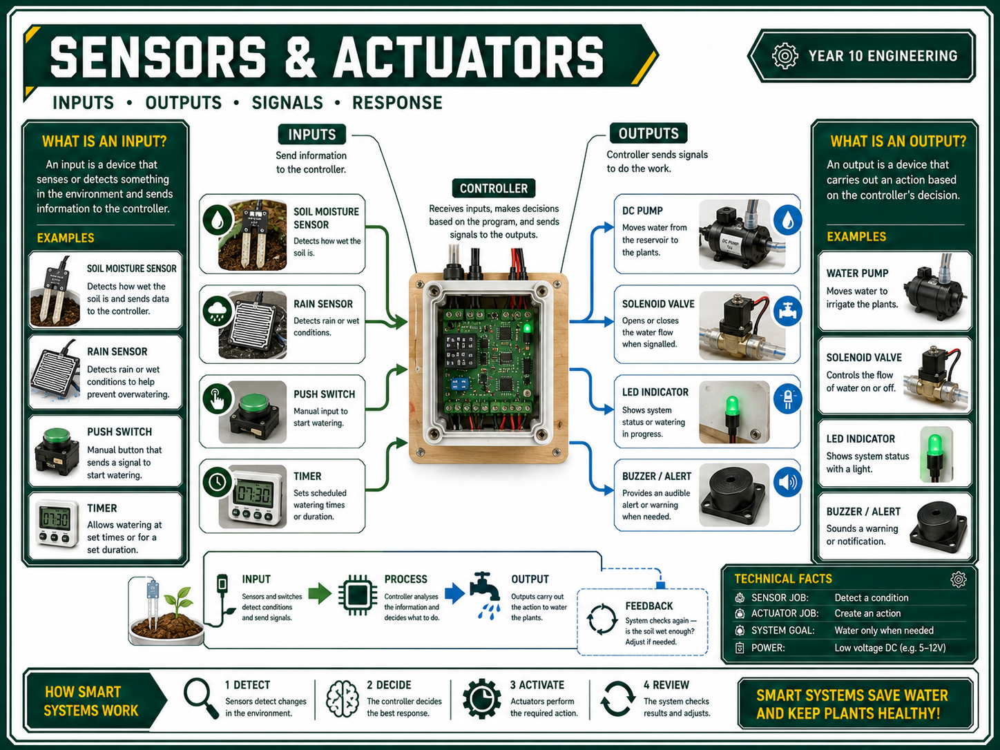

Garden Watering System Info Sheets
Printable student sheets for the Year 10 Control Systems project.
Project focus
- Build a small watering control system.
- Use input, process, output and feedback language.
- Test reliability and water efficiency.
Evidence focus
- System diagram and algorithm.
- Wiring and irrigation layout.
- Test data, fault log and evaluation.
Safety focus
- Separate wet and dry zones.
- Use teacher checks before power.
- Stop testing if water reaches electronics.
1. System Overview
Input -> Process -> Output
Student task
- Label your own input, process and output.
- Explain what feedback your system uses or could use.
- Write one sentence explaining how the system knows when to water.
Folio sentence starter
My system uses _____ as the input. The controller/process decides _____. The output is _____.
2. Safe Test Setup
Wet zone / dry zone
Before testing
- Show your teacher the circuit before power is connected.
- Keep batteries, controllers and exposed wires in the dry zone.
- Use a tray or container for the wet zone.
- Have a towel ready for spills.
Teacher check
3. Algorithm / Flowchart
Decision logic
Write your algorithm
| Step | What happens? |
|---|---|
| 1 | Read the input: |
| 2 | Decision rule: |
| 3 | Output action: |
| 4 | Stop / reset condition: |
4. Sensors, Actuators & Controllers
Choose components
Component choice
| Part | Chosen component | Why? |
|---|---|---|
| Input | ||
| Controller | ||
| Output |
Quick check
- Can you explain what each part does?
- Can your output safely be switched by your control circuit?
5. Design Planning
Before building
Planning checklist
- Design brief and success criteria.
- Irrigation layout.
- Wiring/circuit plan.
- Materials and component list.
- Build sequence and safety controls.
6. Testing & Evaluation
Evidence, not guesses
Test table
| Test | Trigger | Time | Water | Result |
|---|---|---|---|---|
| 1 | ||||
| 2 | ||||
| 3 |